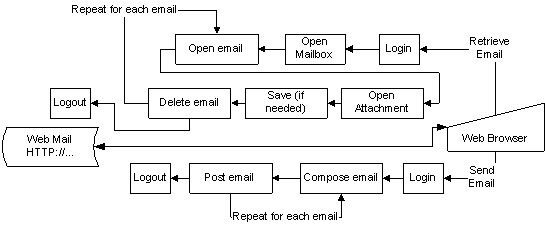
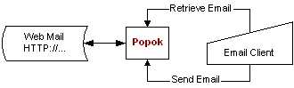

Popok: webmail to pop3/smtp proxy daemon
UNMAINTAINED!
In short
Is a daemon script that act as a pop3/smtp gateway to a specific Communigate Pro Webmail. Last known to be quite usable at Plasacom Webmail and Telkomnet Webmail, both are Indonesian webmail. I used this a lot to access emails from my pop3 client, instead of using their shabby webmail interface.
A project with CVS repository has been set up at sourceforge.net, mostly for hosting the CVS. If somehow you want to take a look at the codes, checkout using cvs client like this:
cvs -d:pserver:anonymous@cvs.sourceforge.net:/cvsroot/popok login cvs -z3 -d:pserver:anonymous@cvs.sourceforge.net:/cvsroot/popok co -P popok
If you only interested in prepackaged windows installation, pick the newest one from the list below.
Description
Popok was created because downloading and composing email on web is such a tedious and slow task compared to interactive with our own personal favourite email client (such as Outlook, Eudora, The Bat, etc), and most POP3 account is either limited to specific internet provider, or simply not-free. You can compare the time-saving capability of popok by looking at these figures:

Before popok, wow, many wait-steps

Using Popok, two wait-steps.
Popok achieve this by emulating web browser, interacting with webmail's web server as if it were any naive users doing their everyday task of checking, reading, and send email. Technically, popok is fully multi-threaded--that is, every new connection will launch a new thread, and has code base which support multiplatform.
Installation
Extract the compressed file to an empty directory, and execute popok.exe to run popok using all default configuration. To change some configuration, do popok.exe --help.
Next, configure your POP3 email client:
- Username:your full email address
- Password:your webmail account password
- POP3 server hostname:localhost
- POP3 server port:110
- SMTP server hostname:localhost (usually the default)
- SMTP server port25 (usually the default)
You should adapt the above parameters to your specific configuration. Use your email address as username, ie: popok@plasa.com. This is required as popok needs to know which webmail server you're talking about.
SMTP is optional, that is you can choose to use your ISP's SMTP server. But if you do intend to use popok as SMTP server, lookout:
- You have to do "POP before SMTP" authentication method. That is, do a quick email check, before sending.
- Make sure the From: field on your email equal to your full email address provided as POP3's username. This is the only way popok can understand which HTTP session to continue (notice popok does not ask password for SMTP?)